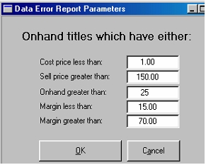

Step 1 Data error report
The data error report is used for checking prices and margins. Correct pricing is necessary if you are to report accurate stock valuations. The report will list all titles with pricing and quantities outside the parameters you set; it will flush out errors such as scanning a barcode into a price field or setting a zero cost price.
Run this report well in advance of the stocktake, particularly if you are not in the habit of doing regular valuation checks. There may be many corrections you have to make.
From the main menu, select Reports to open Bookscan Reports where you select the report: Title/ Valuation/ Data Errors.

Set the parameters for your report:
| · | Cost price less than
|
| What is the lowest realistic cost price for most of your stock? If you wouldn't normally have anything less than $2.00, set the parameter at say $1.00. This will find anything with a zero cost price. Alternatively you may wish to set it to one cent to pick up zero cost prices.
|
| · | Sell price greater than
|
| If you wouldn't normally sell anything more expensive than say $120.00, but have a few items worth around $230, set this parameter at say $150. You can ignore the (correctly priced) high-priced items on the list and catch those wrongly priced.
|
| · | On hand greater than
|
| Use a quantity set just above your normal largest quantity. If you normally don't have more than 20 of something, set the parameter at 25. You might have 800 bookmarks but you can ignore them on the printout but catch a quantity set at say 97897.
|
| · | Margin less than and Margin greater than
|
| Again set the parameters wide of your normal margins. If you think you don't make less than 25% on anything and no more than 50%, then set these at say 15% and 70%.
|
Click the OK button to run the report. Review the report and correct any errors in the title master.
| |